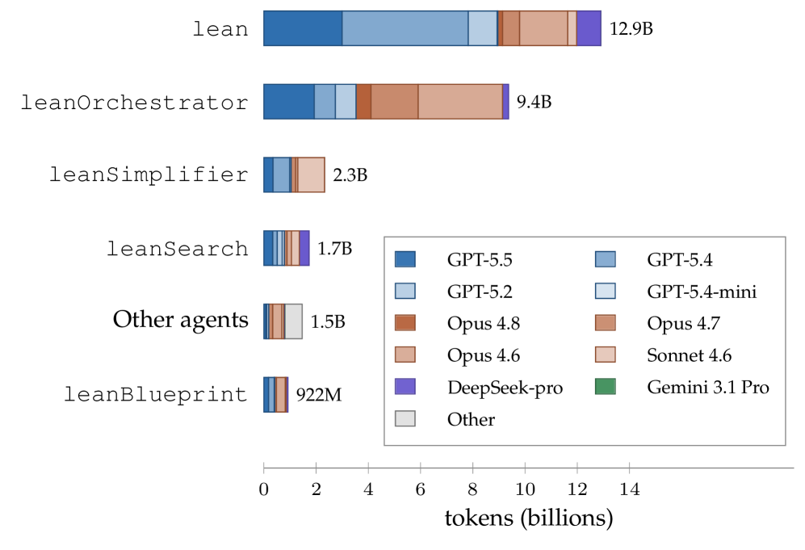

Multi-agent LLM workflow autoformalizes the fundamental theorem of matrix-product states in Lean 4, producing new tensor-network and quantum-information Mathlib libraries.
Abstract
We build a team of specialized large language-model agents and present an agent-driven workflow for research-level formalization in theoretical physics, with the autoformalization of the fundamental theorem of matrix-product states as a demonstration. The agents, coordinated through a structured mathematical blueprint and periodic human review, orchestrated and executed the full formalization autonomously. For some statements, the agents were able to explore new proof routes that are not part of the standard literature. Along the way the agents produced extensive tensor-network and quantum-information libraries not previously available in Mathlib, Lean's mathematical library. As a physical application, the formalization also extends towards symmetry-protected topological phases in one dimension. We find that the main bottleneck in large-scale autoformalization is enforcing mathematical intent and we provide a detailed study of the full process and various subtleties involved. We release the codebase as the library \href{https://github.com/LionSR/TNLean}{TNLean}, together with a \nChapters{}-chapter \href{https://lionsr.github.io/TNLean/blueprint/}{blueprint} of the formalization effort.
Problem
Research-level formalization in theoretical physics is labor-intensive, and Mathlib lacks libraries for tensor networks and quantum information needed to formalize the fundamental theorem of matrix-product states.
Approach
A team of specialized LLM agents (orchestrator, search, prover, simplifier, blueprint sync, reviewer) coordinated through a structured mathematical blueprint with periodic human oversight, using a Lean 4 server for diagnostics. Agents autonomously decomposed tasks, wrote proofs, closed sorries, and synced LaTeX blueprints. Missing Mathlib results (Jordan normal form, Burnside's theorem, Kadison-Schwarz) were replaced with alternative proof routes.
Results
The agents completed the autoformalization of the fundamental theorem of matrix-product states in Lean 4, extending toward one-dimensional symmetry-protected topological phases, and released the TNLean library with a multi-chapter blueprint. Total model API cost was about $20,206.

Figure 5: Token usage by agent role, each bar broken down by the language models that role used. Proof writing and orchestration dominate, consistent with assigning the most capable models to the tasks where an error is most expensive.